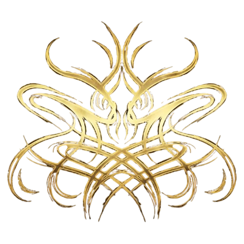
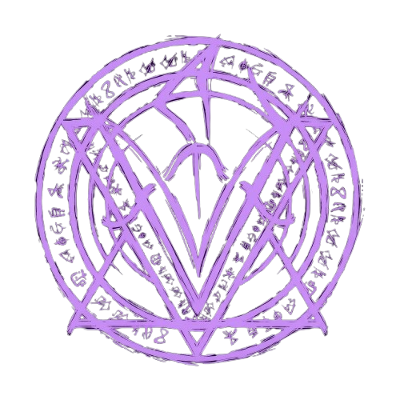
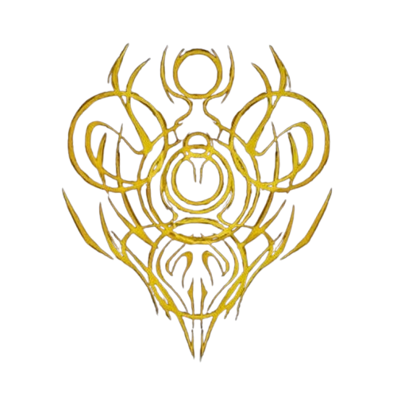

O DESPERTAR DO PARANORMAL
O medo é uma força que ultrapassa aquilo que conhecemos. Quanto maior o temor da humanidade diante do desconhecido, mais fina se torna a Membrana que separa nossa realidade do Outro Lado. Ao longo da história, acontecimentos inexplicáveis começaram a deixar marcas, atraindo a atenção daqueles que ousaram investigar o que existia além do mundo conhecido.
"O paranormal não vem para a nossa realidade de maneira fácil. Ou pelo menos, as coisas deveriam ser assim." Cellbit

O outro Lado
Uma realidade que existe além da nossa, habitada por forças e entidades que desafiam as leis que conhecemos. É através da Membrana que essas manifestações encontram um caminho para alcançar nossa realidade.

Rituais
Rituais são formas de manipular o paranormal e estabelecer uma conexão com o Outro Lado. Por meio deles, conhecimentos e elementos paranormais podem ser utilizados para produzir efeitos que ultrapassam os limites da realidade.

Relíquias
As Relíquias são manifestações extremamente poderosas ligadas às entidades do Outro Lado. Elas representam aspectos fundamentais do paranormal e carregam uma influência capaz de afetar profundamente aqueles que entram em contato com elas.